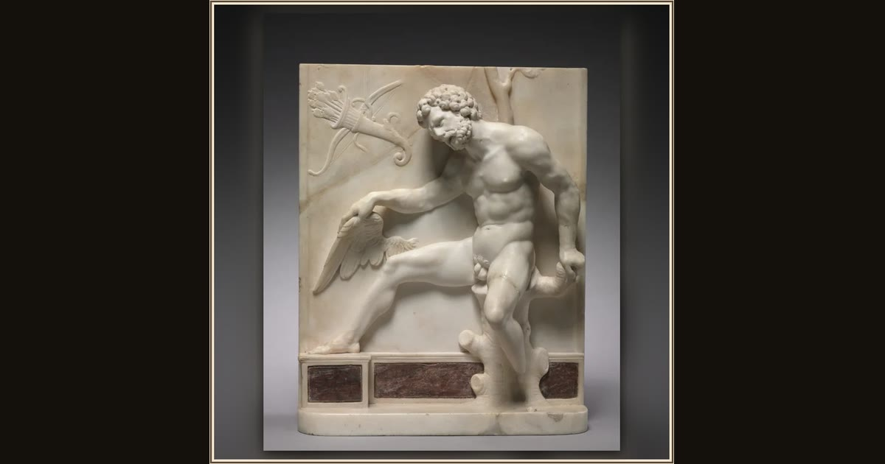

Philoctetes on the Island of Lemnos
Giovanni Maria Mosca (Italian, 1495/99–1574) · c. 1510–15 · cma
A marble relief of Philoctetes alone on Lemnos, fanning his wounded leg with a bird's wing, his quiver and bow behind him; Odysseus recalls marooning him for his festering foot (7). Explore its place in Sophocles's Plays, Philoctetes, line 7.